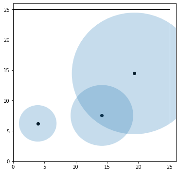
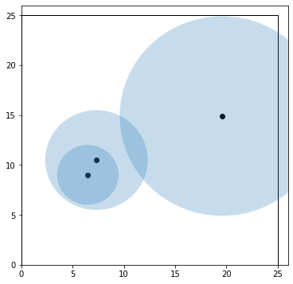

1.4. Continuous Optimization#
# This code cell installs packages on Colab
import sys
if "google.colab" in sys.modules:
!wget "https://raw.githubusercontent.com/ndcbe/CBE60499/main/notebooks/helper.py"
import helper
helper.install_idaes()
helper.install_ipopt()
helper.install_glpk()
helper.download_data(['student_diet.csv'])
helper.download_figures(['pack1.png','pack2.png','pack3.png'])
import pandas as pd
import pyomo.environ as pyo
1.4.1. Linear Programs: Student Diet Example#
Reference: https://docs.mosek.com/modeling-cookbook/linear.html
You want to save money eating while remaining healthy. A healthy diet requires at least P=6 units of protein, C=15 units of carbohydrates, F=5 units of fats and V=7 units of vitamins. Due to compounding factors (blizzard during Lent), our campus only has these options:
# Load data from file, use the first column (0, recall Python starts counting at 0) as the index
food_options = pd.read_csv('https://raw.githubusercontent.com/ndcbe/optimization/main/notebooks/data/student_diet.csv',index_col=0)
# Print up the the first 10 rows of data
food_options.head(10)
| P | C | F | V | price | |
|---|---|---|---|---|---|
| takeaway | 3.0 | 3 | 2 | 1 | 5 |
| vegtables | 1.0 | 2 | 0 | 4 | 1 |
| bread | 0.5 | 4 | 1 | 0 | 2 |
Let’s build a Python dictionary to store the nutrient requirements. (I strongly recommend not touching Python until we write the model on paper. I am including this here to avoid scrolling between the problem description and this cell.)
# Uncomment and fill in with all of the data
# nutrient_requirements = {'P':6, 'C':15 }
# Add your solution here
1.4.1.1. Propose an Optimization Model#
Sets
Parameters
Variables
Constraints
Degree of Freedom Analysis
We will later learn more about how to factor inequality constraints into degree of freedom analysis. For now, please count the number of equality and inequality constraints separately.
1.4.1.2. Solve in Pyomo#
With our optimization model written on paper, we can proceed to solve in Pyomo. Before we start, let’s review a few pandas tricks.
# Extract the column names, convert to a list
food_options.columns.to_list()
['P', 'C', 'F', 'V', 'price']
# Same as above, but drop the last entry
nutrients = food_options.columns.to_list()[0:4]
nutrients
['P', 'C', 'F', 'V']
# Extract the index names, convert to a list
foods = food_options.index.to_list()
foods
['takeaway', 'vegtables', 'bread']
# Create a dictionary with keys such as ('takeaway', 'P')
# Do not include 'price'
food_info = food_options[nutrients].stack().to_dict()
food_info
{('takeaway', 'P'): 3.0,
('takeaway', 'C'): 3.0,
('takeaway', 'F'): 2.0,
('takeaway', 'V'): 1.0,
('vegtables', 'P'): 1.0,
('vegtables', 'C'): 2.0,
('vegtables', 'F'): 0.0,
('vegtables', 'V'): 4.0,
('bread', 'P'): 0.5,
('bread', 'C'): 4.0,
('bread', 'F'): 1.0,
('bread', 'V'): 0.0}
# Create dictionary of only prices
price = food_options['price'].to_dict()
price
{'takeaway': 5, 'vegtables': 1, 'bread': 2}
Now let’s build our Pyomo model!
# Add your solution here
3 Set Declarations
FOOD : Size=1, Index=None, Ordered=Insertion
Key : Dimen : Domain : Size : Members
None : 1 : Any : 3 : {'takeaway', 'vegtables', 'bread'}
NUTRIENTS : Size=1, Index=None, Ordered=Insertion
Key : Dimen : Domain : Size : Members
None : 1 : Any : 4 : {'P', 'C', 'F', 'V'}
food_info_index : Size=1, Index=None, Ordered=True
Key : Dimen : Domain : Size : Members
None : 2 : FOOD*NUTRIENTS : 12 : {('takeaway', 'P'), ('takeaway', 'C'), ('takeaway', 'F'), ('takeaway', 'V'), ('vegtables', 'P'), ('vegtables', 'C'), ('vegtables', 'F'), ('vegtables', 'V'), ('bread', 'P'), ('bread', 'C'), ('bread', 'F'), ('bread', 'V')}
3 Param Declarations
food_info : Size=12, Index=food_info_index, Domain=Any, Default=None, Mutable=False
Key : Value
('bread', 'C') : 4.0
('bread', 'F') : 1.0
('bread', 'P') : 0.5
('bread', 'V') : 0.0
('takeaway', 'C') : 3.0
('takeaway', 'F') : 2.0
('takeaway', 'P') : 3.0
('takeaway', 'V') : 1.0
('vegtables', 'C') : 2.0
('vegtables', 'F') : 0.0
('vegtables', 'P') : 1.0
('vegtables', 'V') : 4.0
needs : Size=4, Index=NUTRIENTS, Domain=Any, Default=None, Mutable=False
Key : Value
C : 15
F : 5
P : 6
V : 7
price : Size=3, Index=FOOD, Domain=Any, Default=None, Mutable=False
Key : Value
bread : 2
takeaway : 5
vegtables : 1
1 Var Declarations
food_eaten : Size=3, Index=FOOD
Key : Lower : Value : Upper : Fixed : Stale : Domain
bread : 0 : 1.0 : None : False : False : NonNegativeReals
takeaway : 0 : 1.0 : None : False : False : NonNegativeReals
vegtables : 0 : 1.0 : None : False : False : NonNegativeReals
1 Objective Declarations
cost : Size=1, Index=None, Active=True
Key : Active : Sense : Expression
None : True : minimize : 5*food_eaten[takeaway] + food_eaten[vegtables] + 2*food_eaten[bread]
1 Constraint Declarations
diet_min : Size=4, Index=NUTRIENTS, Active=True
Key : Lower : Body : Upper : Active
C : 15.0 : 3.0*food_eaten[takeaway] + 2.0*food_eaten[vegtables] + 4.0*food_eaten[bread] : +Inf : True
F : 5.0 : 2.0*food_eaten[takeaway] + food_eaten[bread] : +Inf : True
P : 6.0 : 3.0*food_eaten[takeaway] + food_eaten[vegtables] + 0.5*food_eaten[bread] : +Inf : True
V : 7.0 : food_eaten[takeaway] + 4.0*food_eaten[vegtables] : +Inf : True
9 Declarations: FOOD NUTRIENTS needs food_info_index food_info price food_eaten diet_min cost
Activity
Check the Pyomo model. Specifically, are the input (parameter) data correct? Do the equations match our model written on paper?
# Specify the solver
solver = pyo.SolverFactory('ipopt')
# Solve
results = solver.solve(m, tee=True)
Ipopt 3.13.2:
******************************************************************************
This program contains Ipopt, a library for large-scale nonlinear optimization.
Ipopt is released as open source code under the Eclipse Public License (EPL).
For more information visit http://projects.coin-or.org/Ipopt
******************************************************************************
This is Ipopt version 3.13.2, running with linear solver ma27.
Number of nonzeros in equality constraint Jacobian...: 0
Number of nonzeros in inequality constraint Jacobian.: 10
Number of nonzeros in Lagrangian Hessian.............: 0
Total number of variables............................: 3
variables with only lower bounds: 3
variables with lower and upper bounds: 0
variables with only upper bounds: 0
Total number of equality constraints.................: 0
Total number of inequality constraints...............: 4
inequality constraints with only lower bounds: 4
inequality constraints with lower and upper bounds: 0
inequality constraints with only upper bounds: 0
iter objective inf_pr inf_du lg(mu) ||d|| lg(rg) alpha_du alpha_pr ls
0 8.0000000e+00 6.00e+00 1.10e+00 -1.0 0.00e+00 - 0.00e+00 0.00e+00 0
1 8.6444860e+00 5.02e+00 9.73e-01 -1.0 1.16e+00 - 2.18e-01 1.54e-01h 1
2 1.3016656e+01 0.00e+00 5.33e-01 -1.0 8.85e-01 - 6.53e-01 1.00e+00h 1
3 1.2884986e+01 0.00e+00 6.91e-02 -1.7 1.53e-01 - 7.53e-01 8.71e-01f 1
4 1.2512801e+01 0.00e+00 1.19e-01 -2.5 4.08e+00 - 1.17e-01 6.52e-01f 1
5 1.2513485e+01 0.00e+00 2.83e-08 -2.5 5.33e-02 - 1.00e+00 1.00e+00f 1
6 1.2500398e+01 0.00e+00 1.50e-09 -3.8 4.46e-02 - 1.00e+00 1.00e+00f 1
7 1.2500005e+01 0.00e+00 1.84e-11 -5.7 5.47e-04 - 1.00e+00 1.00e+00f 1
8 1.2500000e+01 0.00e+00 2.54e-14 -8.6 1.25e-05 - 1.00e+00 1.00e+00f 1
Number of Iterations....: 8
(scaled) (unscaled)
Objective...............: 1.2499999882508366e+01 1.2499999882508366e+01
Dual infeasibility......: 2.5375692660596042e-14 2.5375692660596042e-14
Constraint violation....: 0.0000000000000000e+00 0.0000000000000000e+00
Complementarity.........: 2.5136445446423303e-09 2.5136445446423303e-09
Overall NLP error.......: 2.5136445446423303e-09 2.5136445446423303e-09
Number of objective function evaluations = 9
Number of objective gradient evaluations = 9
Number of equality constraint evaluations = 0
Number of inequality constraint evaluations = 9
Number of equality constraint Jacobian evaluations = 0
Number of inequality constraint Jacobian evaluations = 9
Number of Lagrangian Hessian evaluations = 8
Total CPU secs in IPOPT (w/o function evaluations) = 0.002
Total CPU secs in NLP function evaluations = 0.000
EXIT: Optimal Solution Found.
Activity
Does your degree of freedom analysis match Ipopt?
1.4.1.3. Analyze Results#
Let’s extract the solution.
# Add your solution here
Units of takeaway eaten = 0.9999999904584187
Units of vegtables eaten = 1.4999999892477958
Units of bread eaten = 2.9999999704842386
TODO: After we discuss optimization theory, add discussion of shadow prices and multipliers here.
1.4.2. Nonlinear Programs: Circle Packing Example#
What is the smallest rectangle you can use to enclose three given circles? Reference: Example 4.4 in Biegler (2010).

1.4.2.1. Propose an Optimization Model#
The following optimization model is given in Biegler (2010):


Activity
Identify the sets, parameters, variables, and constraints.
Sets
Parameters
Variables
Constraints
Activity
Perform degree of freedom analysis.
Degree of Freedom Analysis
1.4.2.2. Implement in Pyomo#
First, we will define functions to create and intialize the model.
import random
import numpy as np
import matplotlib.pyplot as plt
import matplotlib.patches as mpatches
def create_circle_model(circle_radii):
''' Create circle optimization model in Pyomo
Arguments:
circle_radii: dictionary with keys=circle name and value=radius (float)
Returns:
model: Pyomo model
'''
# Number of circles to consider
n = len(circle_radii)
# Create a concrete Pyomo model.
model = pyo.ConcreteModel()
# Initialize index for circles
model.CIRCLES = pyo.Set(initialize = circle_radii.keys())
# Create parameter
model.R = pyo.Param(model.CIRCLES, domain=pyo.PositiveReals, initialize=circle_radii)
# Create variables for box
model.a = pyo.Var(domain=pyo.PositiveReals)
model.b = pyo.Var(domain=pyo.PositiveReals)
# Set objective
model.obj = pyo.Objective(expr=2*(model.a + model.b), sense = pyo.minimize)
# Create variables for circle centers
model.x = pyo.Var(model.CIRCLES, domain=pyo.PositiveReals)
model.y = pyo.Var(model.CIRCLES, domain=pyo.PositiveReals)
# "In the box" constraints
def left_x(m,c):
return m.x[c] >= model.R[c]
model.left_x_con = pyo.Constraint(model.CIRCLES, rule=left_x)
def left_y(m,c):
return m.y[c] >= model.R[c]
model.left_y_con = pyo.Constraint(model.CIRCLES, rule=left_y)
def right_x(m,c):
return m.x[c] <= m.b - model.R[c]
model.right_x_con = pyo.Constraint(model.CIRCLES, rule=right_x)
def right_y(m,c):
return m.y[c] <= m.a - model.R[c]
model.right_y_con = pyo.Constraint(model.CIRCLES, rule=right_y)
# No overlap constraints
def no_overlap(m,c1,c2):
if c1 < c2:
return (m.x[c1] - m.x[c2])**2 + (m.y[c1] - m.y[c2])**2 >= (model.R[c1] + model.R[c2])**2
else:
return pyo.Constraint.Skip
model.no_overlap_con = pyo.Constraint(model.CIRCLES, model.CIRCLES, rule=no_overlap)
return model
def initialize_circle_model(model, a_init=25, b_init=25):
''' Initialize the x and y coordinates using uniform distribution
Arguments:
a_init: initial value for a (default=25)
b_init: initial value for b (default=25)
Returns:
Nothing. But per Pyomo scoping rules, the input argument `model`
can be modified in this function.
'''
# Initialize
model.a = 25
model.b = 25
for i in model.CIRCLES:
# Adding circle radii ensures the remains in the >0, >0 quadrant
model.x[i] = random.uniform(0,10) + model.R[i]
model.y[i] = random.uniform(0,10) + model.R[i]
Next, we will create a dictionary containing the circle names and radii values.
# Create dictionary with circle data
circle_data = {'A':10.0, 'B':5.0, 'C':3.0}
circle_data
{'A': 10.0, 'B': 5.0, 'C': 3.0}
# Access the keys
circle_data.keys()
dict_keys(['A', 'B', 'C'])
Now let’s create the model.
# Create model
model = create_circle_model(circle_data)
model.pprint()
2 Set Declarations
CIRCLES : Size=1, Index=None, Ordered=Insertion
Key : Dimen : Domain : Size : Members
None : 1 : Any : 3 : {'A', 'B', 'C'}
no_overlap_con_index : Size=1, Index=None, Ordered=True
Key : Dimen : Domain : Size : Members
None : 2 : CIRCLES*CIRCLES : 9 : {('A', 'A'), ('A', 'B'), ('A', 'C'), ('B', 'A'), ('B', 'B'), ('B', 'C'), ('C', 'A'), ('C', 'B'), ('C', 'C')}
1 Param Declarations
R : Size=3, Index=CIRCLES, Domain=PositiveReals, Default=None, Mutable=False
Key : Value
A : 10.0
B : 5.0
C : 3.0
4 Var Declarations
a : Size=1, Index=None
Key : Lower : Value : Upper : Fixed : Stale : Domain
None : 0 : None : None : False : True : PositiveReals
b : Size=1, Index=None
Key : Lower : Value : Upper : Fixed : Stale : Domain
None : 0 : None : None : False : True : PositiveReals
x : Size=3, Index=CIRCLES
Key : Lower : Value : Upper : Fixed : Stale : Domain
A : 0 : None : None : False : True : PositiveReals
B : 0 : None : None : False : True : PositiveReals
C : 0 : None : None : False : True : PositiveReals
y : Size=3, Index=CIRCLES
Key : Lower : Value : Upper : Fixed : Stale : Domain
A : 0 : None : None : False : True : PositiveReals
B : 0 : None : None : False : True : PositiveReals
C : 0 : None : None : False : True : PositiveReals
1 Objective Declarations
obj : Size=1, Index=None, Active=True
Key : Active : Sense : Expression
None : True : minimize : 2*(a + b)
5 Constraint Declarations
left_x_con : Size=3, Index=CIRCLES, Active=True
Key : Lower : Body : Upper : Active
A : 10.0 : x[A] : +Inf : True
B : 5.0 : x[B] : +Inf : True
C : 3.0 : x[C] : +Inf : True
left_y_con : Size=3, Index=CIRCLES, Active=True
Key : Lower : Body : Upper : Active
A : 10.0 : y[A] : +Inf : True
B : 5.0 : y[B] : +Inf : True
C : 3.0 : y[C] : +Inf : True
no_overlap_con : Size=3, Index=no_overlap_con_index, Active=True
Key : Lower : Body : Upper : Active
('A', 'B') : 225.0 : (x[A] - x[B])**2 + (y[A] - y[B])**2 : +Inf : True
('A', 'C') : 169.0 : (x[A] - x[C])**2 + (y[A] - y[C])**2 : +Inf : True
('B', 'C') : 64.0 : (x[B] - x[C])**2 + (y[B] - y[C])**2 : +Inf : True
right_x_con : Size=3, Index=CIRCLES, Active=True
Key : Lower : Body : Upper : Active
A : -Inf : x[A] - (b - 10.0) : 0.0 : True
B : -Inf : x[B] - (b - 5.0) : 0.0 : True
C : -Inf : x[C] - (b - 3.0) : 0.0 : True
right_y_con : Size=3, Index=CIRCLES, Active=True
Key : Lower : Body : Upper : Active
A : -Inf : y[A] - (a - 10.0) : 0.0 : True
B : -Inf : y[B] - (a - 5.0) : 0.0 : True
C : -Inf : y[C] - (a - 3.0) : 0.0 : True
13 Declarations: CIRCLES R a b obj x y left_x_con left_y_con right_x_con right_y_con no_overlap_con_index no_overlap_con
And let’s initialize the model.
# Initialize model
initialize_circle_model(model)
model.pprint()
2 Set Declarations
CIRCLES : Size=1, Index=None, Ordered=Insertion
Key : Dimen : Domain : Size : Members
None : 1 : Any : 3 : {'A', 'B', 'C'}
no_overlap_con_index : Size=1, Index=None, Ordered=True
Key : Dimen : Domain : Size : Members
None : 2 : CIRCLES*CIRCLES : 9 : {('A', 'A'), ('A', 'B'), ('A', 'C'), ('B', 'A'), ('B', 'B'), ('B', 'C'), ('C', 'A'), ('C', 'B'), ('C', 'C')}
1 Param Declarations
R : Size=3, Index=CIRCLES, Domain=PositiveReals, Default=None, Mutable=False
Key : Value
A : 10.0
B : 5.0
C : 3.0
4 Var Declarations
a : Size=1, Index=None
Key : Lower : Value : Upper : Fixed : Stale : Domain
None : 0 : 25 : None : False : False : PositiveReals
b : Size=1, Index=None
Key : Lower : Value : Upper : Fixed : Stale : Domain
None : 0 : 25 : None : False : False : PositiveReals
x : Size=3, Index=CIRCLES
Key : Lower : Value : Upper : Fixed : Stale : Domain
A : 0 : 19.37245589877164 : None : False : False : PositiveReals
B : 0 : 14.175030366901597 : None : False : False : PositiveReals
C : 0 : 3.9363588537058454 : None : False : False : PositiveReals
y : Size=3, Index=CIRCLES
Key : Lower : Value : Upper : Fixed : Stale : Domain
A : 0 : 14.452708848019624 : None : False : False : PositiveReals
B : 0 : 7.543623830819569 : None : False : False : PositiveReals
C : 0 : 6.234252703186074 : None : False : False : PositiveReals
1 Objective Declarations
obj : Size=1, Index=None, Active=True
Key : Active : Sense : Expression
None : True : minimize : 2*(a + b)
5 Constraint Declarations
left_x_con : Size=3, Index=CIRCLES, Active=True
Key : Lower : Body : Upper : Active
A : 10.0 : x[A] : +Inf : True
B : 5.0 : x[B] : +Inf : True
C : 3.0 : x[C] : +Inf : True
left_y_con : Size=3, Index=CIRCLES, Active=True
Key : Lower : Body : Upper : Active
A : 10.0 : y[A] : +Inf : True
B : 5.0 : y[B] : +Inf : True
C : 3.0 : y[C] : +Inf : True
no_overlap_con : Size=3, Index=no_overlap_con_index, Active=True
Key : Lower : Body : Upper : Active
('A', 'B') : 225.0 : (x[A] - x[B])**2 + (y[A] - y[B])**2 : +Inf : True
('A', 'C') : 169.0 : (x[A] - x[C])**2 + (y[A] - y[C])**2 : +Inf : True
('B', 'C') : 64.0 : (x[B] - x[C])**2 + (y[B] - y[C])**2 : +Inf : True
right_x_con : Size=3, Index=CIRCLES, Active=True
Key : Lower : Body : Upper : Active
A : -Inf : x[A] - (b - 10.0) : 0.0 : True
B : -Inf : x[B] - (b - 5.0) : 0.0 : True
C : -Inf : x[C] - (b - 3.0) : 0.0 : True
right_y_con : Size=3, Index=CIRCLES, Active=True
Key : Lower : Body : Upper : Active
A : -Inf : y[A] - (a - 10.0) : 0.0 : True
B : -Inf : y[B] - (a - 5.0) : 0.0 : True
C : -Inf : y[C] - (a - 3.0) : 0.0 : True
13 Declarations: CIRCLES R a b obj x y left_x_con left_y_con right_x_con right_y_con no_overlap_con_index no_overlap_con
Activity
Compare the initial values for x and y with and without initialization. What is the default initial value in Pyomo?
1.4.2.3. Visualize Initial Point#
Next, we’ll define a function to plot the solution (or initial point)
# Plot initial point
def plot_circles(m):
''' Plot circles using data in Pyomo model
Arguments:
m: Pyomo concrete model
Returns:
Nothing (but makes a figure)
'''
# Create figure
fig, ax = plt.subplots(1,figsize=(6,6))
# Adjust axes
l = max(m.a.value,m.b.value) + 1
ax.set_xlim(0,l)
ax.set_ylim(0,l)
# Draw box
art = mpatches.Rectangle((0,0), width=m.b.value, height=m.a.value,fill=False)
ax.add_patch(art)
# Draw circles and mark center
for i in m.CIRCLES:
art2 = mpatches.Circle( (m.x[i].value,m.y[i].value), radius=m.R[i],fill=True,alpha=0.25)
ax.add_patch(art2)
plt.scatter(m.x[i].value,m.y[i].value,color='black')
# Show plot
plt.show()
plot_circles(model)

1.4.2.4. Solve and Inspect the Solution#
# Specify the solver
solver = pyo.SolverFactory('ipopt')
# Solve the model
results = solver.solve(model, tee = True)
Ipopt 3.13.2:
******************************************************************************
This program contains Ipopt, a library for large-scale nonlinear optimization.
Ipopt is released as open source code under the Eclipse Public License (EPL).
For more information visit http://projects.coin-or.org/Ipopt
******************************************************************************
This is Ipopt version 3.13.2, running with linear solver ma27.
Number of nonzeros in equality constraint Jacobian...: 0
Number of nonzeros in inequality constraint Jacobian.: 30
Number of nonzeros in Lagrangian Hessian.............: 12
Total number of variables............................: 8
variables with only lower bounds: 8
variables with lower and upper bounds: 0
variables with only upper bounds: 0
Total number of equality constraints.................: 0
Total number of inequality constraints...............: 15
inequality constraints with only lower bounds: 9
inequality constraints with lower and upper bounds: 0
inequality constraints with only upper bounds: 6
iter objective inf_pr inf_du lg(mu) ||d|| lg(rg) alpha_du alpha_pr ls
0 1.0000000e+02 1.50e+02 1.01e+00 -1.0 0.00e+00 - 0.00e+00 0.00e+00 0
1 1.0313665e+02 8.56e+01 1.10e+00 -1.0 1.11e+01 - 4.84e-01 3.16e-01h 1
2 1.0122024e+02 4.44e+01 1.04e+00 -1.0 4.29e+01 - 2.73e-01 1.46e-01h 1
3 9.9356199e+01 3.24e-01 4.47e-01 -1.0 1.00e+01 - 9.36e-01 8.45e-01h 1
4 9.8949272e+01 0.00e+00 1.23e-01 -1.0 1.61e+01 - 8.63e-01 1.00e+00h 1
5 9.8907634e+01 0.00e+00 3.14e-02 -1.0 5.93e+01 - 1.00e+00 1.00e+00h 1
6 9.8897118e+01 0.00e+00 1.01e-02 -1.0 3.46e+01 - 1.00e+00 1.00e+00h 1
7 9.8899831e+01 0.00e+00 3.28e-03 -1.0 3.59e+01 - 1.00e+00 1.00e+00h 1
8 9.8899882e+01 0.00e+00 1.40e-04 -1.0 1.53e+01 - 1.00e+00 1.00e+00h 1
9 9.8394322e+01 0.00e+00 2.11e-04 -1.7 1.24e+00 - 1.00e+00 1.00e+00h 1
iter objective inf_pr inf_du lg(mu) ||d|| lg(rg) alpha_du alpha_pr ls
10 9.8284887e+01 0.00e+00 4.44e-05 -3.8 2.68e-01 - 1.00e+00 9.98e-01f 1
11 9.8284281e+01 0.00e+00 6.66e-09 -5.7 7.01e-03 - 1.00e+00 1.00e+00h 1
12 9.8284270e+01 0.00e+00 3.24e-12 -8.6 5.49e-04 - 1.00e+00 1.00e+00h 1
Number of Iterations....: 12
(scaled) (unscaled)
Objective...............: 9.8284270438748507e+01 9.8284270438748507e+01
Dual infeasibility......: 3.2404583559775637e-12 3.2404583559775637e-12
Constraint violation....: 0.0000000000000000e+00 0.0000000000000000e+00
Complementarity.........: 2.5221946198982285e-09 2.5221946198982285e-09
Overall NLP error.......: 2.5221946198982285e-09 2.5221946198982285e-09
Number of objective function evaluations = 13
Number of objective gradient evaluations = 13
Number of equality constraint evaluations = 0
Number of inequality constraint evaluations = 13
Number of equality constraint Jacobian evaluations = 0
Number of inequality constraint Jacobian evaluations = 13
Number of Lagrangian Hessian evaluations = 12
Total CPU secs in IPOPT (w/o function evaluations) = 0.003
Total CPU secs in NLP function evaluations = 0.000
EXIT: Optimal Solution Found.
Next, we can inspect the solution. Because Pyomo is a Python extension, we can use Pyoth (for loops, etc.) to programmatically inspect the solution.
# Print variable values
print("Name\tValue")
for c in model.component_data_objects(pyo.Var):
print(c.name,"\t", pyo.value(c))
# Plot solution
plot_circles(model)
Name Value
a 29.14213541618474
b 19.99999980318951
x[A] 9.99999990125201
x[B] 14.999999849644157
x[C] 4.723219051632863
y[A] 19.1421355149319
y[B] 4.999999951252102
y[C] 5.4079499719072

# Print constraints
for c in model.component_data_objects(pyo.Constraint):
print(c.name,"\t", pyo.value(c.lower),"\t", pyo.value(c.body),"\t", pyo.value(c.upper))
left_x_con[A] 10.0 9.99999990125201 None
left_x_con[B] 5.0 14.999999849644157 None
left_x_con[C] 3.0 4.723219051632863 None
left_y_con[A] 10.0 19.1421355149319 None
left_y_con[B] 5.0 4.999999951252102 None
left_y_con[C] 3.0 5.4079499719072 None
right_x_con[A] None 9.806250034216646e-08 0.0
right_x_con[B] None 4.6454646351890005e-08 0.0
right_x_con[C] None -12.276780751556647 0.0
right_y_con[A] None 9.87471615587765e-08 0.0
right_y_con[B] None -19.142135464932636 0.0
right_y_con[C] None -20.73418544427754 0.0
no_overlap_con[A,B] 225.0 224.99999778541843 None
no_overlap_con[A,C] 169.0 216.47226866513608 None
no_overlap_con[B,C] 64.0 105.77864678972617 None
1.4.2.5. Reinitialize and Resolve#
Activity
Reinitialize the model, plot the initial point, resolve, and plot the solution. Is there more than one solution?
# Initialize and print the model
# Add your solution here
2 Set Declarations
CIRCLES : Size=1, Index=None, Ordered=Insertion
Key : Dimen : Domain : Size : Members
None : 1 : Any : 3 : {'A', 'B', 'C'}
no_overlap_con_index : Size=1, Index=None, Ordered=True
Key : Dimen : Domain : Size : Members
None : 2 : CIRCLES*CIRCLES : 9 : {('A', 'A'), ('A', 'B'), ('A', 'C'), ('B', 'A'), ('B', 'B'), ('B', 'C'), ('C', 'A'), ('C', 'B'), ('C', 'C')}
1 Param Declarations
R : Size=3, Index=CIRCLES, Domain=PositiveReals, Default=None, Mutable=False
Key : Value
A : 10.0
B : 5.0
C : 3.0
4 Var Declarations
a : Size=1, Index=None
Key : Lower : Value : Upper : Fixed : Stale : Domain
None : 0 : 25 : None : False : False : PositiveReals
b : Size=1, Index=None
Key : Lower : Value : Upper : Fixed : Stale : Domain
None : 0 : 25 : None : False : False : PositiveReals
x : Size=3, Index=CIRCLES
Key : Lower : Value : Upper : Fixed : Stale : Domain
A : 0 : 19.584576155980667 : None : False : False : PositiveReals
B : 0 : 7.314989643761216 : None : False : False : PositiveReals
C : 0 : 6.471478399524947 : None : False : False : PositiveReals
y : Size=3, Index=CIRCLES
Key : Lower : Value : Upper : Fixed : Stale : Domain
A : 0 : 14.902286214475343 : None : False : False : PositiveReals
B : 0 : 10.489228593009017 : None : False : False : PositiveReals
C : 0 : 9.00880553584265 : None : False : False : PositiveReals
1 Objective Declarations
obj : Size=1, Index=None, Active=True
Key : Active : Sense : Expression
None : True : minimize : 2*(a + b)
5 Constraint Declarations
left_x_con : Size=3, Index=CIRCLES, Active=True
Key : Lower : Body : Upper : Active
A : 10.0 : x[A] : +Inf : True
B : 5.0 : x[B] : +Inf : True
C : 3.0 : x[C] : +Inf : True
left_y_con : Size=3, Index=CIRCLES, Active=True
Key : Lower : Body : Upper : Active
A : 10.0 : y[A] : +Inf : True
B : 5.0 : y[B] : +Inf : True
C : 3.0 : y[C] : +Inf : True
no_overlap_con : Size=3, Index=no_overlap_con_index, Active=True
Key : Lower : Body : Upper : Active
('A', 'B') : 225.0 : (x[A] - x[B])**2 + (y[A] - y[B])**2 : +Inf : True
('A', 'C') : 169.0 : (x[A] - x[C])**2 + (y[A] - y[C])**2 : +Inf : True
('B', 'C') : 64.0 : (x[B] - x[C])**2 + (y[B] - y[C])**2 : +Inf : True
right_x_con : Size=3, Index=CIRCLES, Active=True
Key : Lower : Body : Upper : Active
A : -Inf : x[A] - (b - 10.0) : 0.0 : True
B : -Inf : x[B] - (b - 5.0) : 0.0 : True
C : -Inf : x[C] - (b - 3.0) : 0.0 : True
right_y_con : Size=3, Index=CIRCLES, Active=True
Key : Lower : Body : Upper : Active
A : -Inf : y[A] - (a - 10.0) : 0.0 : True
B : -Inf : y[B] - (a - 5.0) : 0.0 : True
C : -Inf : y[C] - (a - 3.0) : 0.0 : True
13 Declarations: CIRCLES R a b obj x y left_x_con left_y_con right_x_con right_y_con no_overlap_con_index no_overlap_con
# Plot initial point
# Add your solution here

# Solve the model
# Add your solution here
Ipopt 3.13.2:
******************************************************************************
This program contains Ipopt, a library for large-scale nonlinear optimization.
Ipopt is released as open source code under the Eclipse Public License (EPL).
For more information visit http://projects.coin-or.org/Ipopt
******************************************************************************
This is Ipopt version 3.13.2, running with linear solver ma27.
Number of nonzeros in equality constraint Jacobian...: 0
Number of nonzeros in inequality constraint Jacobian.: 30
Number of nonzeros in Lagrangian Hessian.............: 12
Total number of variables............................: 8
variables with only lower bounds: 8
variables with lower and upper bounds: 0
variables with only upper bounds: 0
Total number of equality constraints.................: 0
Total number of inequality constraints...............: 15
inequality constraints with only lower bounds: 9
inequality constraints with lower and upper bounds: 0
inequality constraints with only upper bounds: 6
iter objective inf_pr inf_du lg(mu) ||d|| lg(rg) alpha_du alpha_pr ls
0 1.0000000e+02 6.11e+01 1.02e+00 -1.0 0.00e+00 - 0.00e+00 0.00e+00 0
1 1.0059888e+02 1.59e+01 2.23e+01 -1.0 1.80e+01 - 1.67e-01 2.64e-01h 1
2 1.0278855e+02 0.00e+00 2.06e+00 -1.0 1.89e+01 - 1.42e-01 1.00e+00h 1
3 1.0025727e+02 0.00e+00 4.27e-01 -1.0 7.37e+00 - 9.58e-01 6.22e-01f 1
4 9.9403733e+01 0.00e+00 1.44e-01 -1.0 2.60e+01 - 7.40e-01 1.00e+00h 1
5 9.8843064e+01 0.00e+00 6.36e-03 -1.0 8.38e+00 - 1.00e+00 1.00e+00h 1
6 9.8390750e+01 0.00e+00 3.92e-04 -1.7 2.22e+00 - 1.00e+00 1.00e+00h 1
7 9.8284949e+01 0.00e+00 5.50e-05 -3.8 2.33e-01 - 1.00e+00 9.98e-01h 1
8 9.8284281e+01 0.00e+00 1.32e-07 -5.7 1.40e-01 - 1.00e+00 1.00e+00h 1
9 9.8284281e+01 0.00e+00 4.01e-10 -5.7 1.26e+01 - 1.00e+00 1.00e+00h 1
iter objective inf_pr inf_du lg(mu) ||d|| lg(rg) alpha_du alpha_pr ls
10 9.8284281e+01 0.00e+00 3.54e-11 -5.7 4.54e-01 - 1.00e+00 1.00e+00h 1
11 9.8284281e+01 0.00e+00 1.84e-11 -5.7 2.74e-03 - 1.00e+00 1.00e+00h 1
12 9.8284270e+01 0.00e+00 1.43e-13 -8.6 2.69e-05 - 1.00e+00 1.00e+00h 1
Number of Iterations....: 12
(scaled) (unscaled)
Objective...............: 9.8284270438748536e+01 9.8284270438748536e+01
Dual infeasibility......: 1.4274501609950705e-13 1.4274501609950705e-13
Constraint violation....: 0.0000000000000000e+00 0.0000000000000000e+00
Complementarity.........: 2.5071318587575989e-09 2.5071318587575989e-09
Overall NLP error.......: 2.5071318587575989e-09 2.5071318587575989e-09
Number of objective function evaluations = 13
Number of objective gradient evaluations = 13
Number of equality constraint evaluations = 0
Number of inequality constraint evaluations = 13
Number of equality constraint Jacobian evaluations = 0
Number of inequality constraint Jacobian evaluations = 13
Number of Lagrangian Hessian evaluations = 12
Total CPU secs in IPOPT (w/o function evaluations) = 0.003
Total CPU secs in NLP function evaluations = 0.000
EXIT: Optimal Solution Found.
# Plot solution
# Add your solution here

1.4.3. Take Away Messages#
Linear programs are convex. We will learn this means all local optima are global optima.
Nonlinear programs may be nonconvex. For nonconvex problems, there often existings many local optima that are not also global optima.
We will learn how to mathematically define convexity and analyze this property.
Initialization is really important in optimization problems with nonlinear objectives or constraints!
There are specialize solves for linear programs, quadratic programs, and convex programs. In this class, we will focus on more general algorithms for (non)convex nonlinear programs including the algorithms used by the
ipoptsolver.